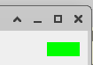

L'interface graphique
L'indicateur «traitement_en_cours»
Certains traitements peuvent être longs.
L'indicateur «traitement_en_cours» (en haut, à droite)

- est vert lorque aucun traitement n'est en cours.
- est rouge lorque un traitement est en cours.